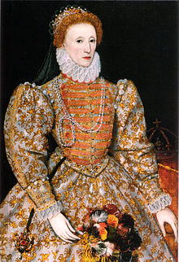

Edward the Confessor
Edward the Confessor (c. 1003 – 5 January 1066) was among the last Anglo-Saxon kings of England.
Usually considered the last king of the House of Wessex, he ruled from 1042 to 1066.
William the Conqueror
William I (c. 1028 – 9 September 1087), usually known as William the Conqueror and sometimes William the Bastard,
was the first Norman King of England, reigning from 1066 until his death in 1087. He was a descendant of Rollo and was
Duke of Normandy from 1035 onward.
Henry VII

Henry VII (Welsh: Harri Tudur; 28 January 1457 – 21 April 1509) was the King of England and Lord of Ireland from his
seizure of the crown on 22 August 1485 to his death. He was the first monarch of the House of Tudor.
Elizabeth I
Elizabeth I (7 September 1533 – 24 March 1603) was Queen of England and Ireland from 17 November 1558 until her death
on 24 March 1603. Sometimes called the Virgin Queen, Gloriana or Good Queen Bess, Elizabeth was the last of the five
monarchs of the House of Tudor.